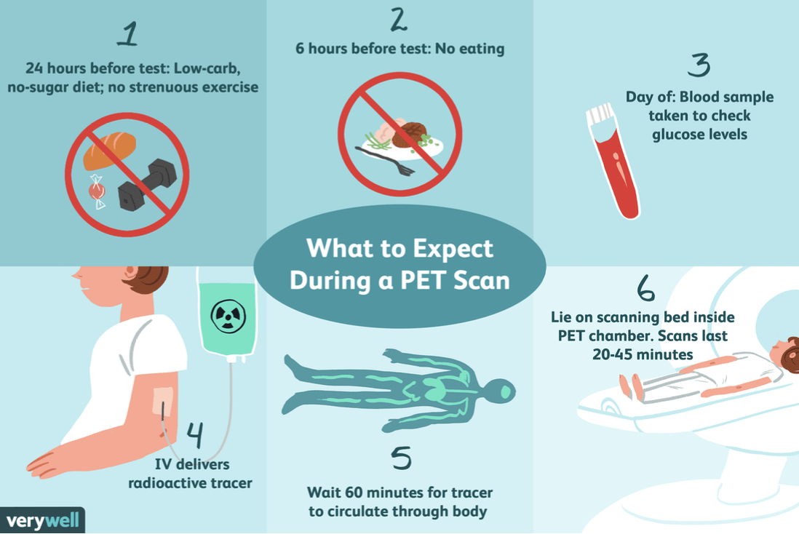

Radiography
Who is most at risk of developing SCLC?
- SCLC mostly occurs in individuals in their early to late 60s and is linked to cigarette smoking, with the majority of patients having a history of tobacco use (Dumoulin et al., 2023; Wang et al., 2023).
- SCLC represents about 14% of all lung cancer cases.
- Individuals of African ancestry are at lower risk of developing SCLC compared to those of European ancestry.
Why is a chest X-ray the most common procedure for diagnosing SCLC?
- A chest X-ray (CXR) is commonly used due to its low cost, easy accessibility, and minimal radiation exposure (approximately 0.02 mSv per CXR).
- Repeated X-rays over time can increase the risk of long-term side effects, such as a slightly higher chance of developing other cancers later in life.

Image Source: Laguna Beach Urgent Care, 2025
Benefits and Drawbacks of Chest X-rays:
- Benefits: Painless, quick, non-invasive, and can reveal large masses or abnormalities in the lungs.
- Drawbacks: Less effective at detecting small tumours or early-stage SCLC, leading to delayed diagnosis. CXRs also provide limited information about cancer spread (metastasis).
Positron Emission Tomography (PET)
Is PET safe for my body?
- PET uses ionizing radiation and radiotracers, such as Fluorine-18 Fluorodeoxyglucose (18F-FDG), which has a short half-life and is evacuated through urine and stool.
- The radiation from a single PET scan has no significant effect on the body.
What can PET bring to SCLC patients?
- PET can distinguish tumours from nodules or masses, which are often mistaken for tumours or other pathologies.
- PET-CT scans combine PET with CT imaging to provide both functional and anatomical details.

Image Source: Raymaakers, 2024
Common Concerns:
- Patients may be concerned about radiation exposure during PET scans, but the amount of radiation is comparable to natural background radiation (8 mSv for adults).
- Pregnant women and breastfeeding mothers should take precautions to avoid radiation exposure.
Radiation Therapy
What is External Beam Radiation Therapy?
- Radiation therapy uses ionizing radiation to kill tumour cells, with doses ranging from 4-20 MeV.
- Fractionation splits the total dose into smaller fractions to allow healthy tissue repair.
What is IMRT?
- Intensity Modulated Radiation Therapy (IMRT) uses beams of varying intensity to deliver precise doses to the tumour while sparing healthy tissue.
Side Effects of Radiation Therapy:
- Skin: Redness, dryness, pigmentation changes, and temporary hair loss.
- Lymphocytes: Temporary decrease in white blood cell count, leading to a weakened immune system.
- GI System: Inflammation of the esophagus, causing sore throat and difficulty swallowing.
- Lung Structures: Pneumonitis and dry cough.
Prophylactic Cranial Irradiation (PCI)
What is PCI?
- PCI is used to reduce the risk of brain metastases in patients with higher stages of SCLC.
- Side effects include memory decline, fatigue, and nausea.
CT-Guided Fine Needle Aspiration (FNA)
What is CT-Guided FNA?
- CT-guided FNA is a minimally invasive biopsy that uses a thin needle to take a sample from the lung, guided by a CT scan.
- The radiation exposure from CT-guided FNA is low (1-7 mSv), and the benefits of early diagnosis outweigh the risks.